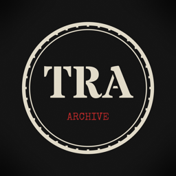

The Reel Archive
@TheReelArchiveTV on YouTube
The Reel Archive is a history channel that turns real 1940s newsreels into short, sourced stories: battles, weapons, codebreakers, home-front life and the people behind them.
How the Shorts are made
- Footage: public-domain newsreels from the U.S. National Archives and Universal Newsreel, via the Internet Archive.
- Facts: checked against published sources, linked in every video description.
- Narration: some Shorts use an AI-generated voice; this is stated in their descriptions.
- Every Short is reviewed and approved by a person before it is published.
- Educational purpose: we document history and do not glorify war or any extremist ideology.
The Reel Archive Uploader
The channel uses a small private tool, The Reel Archive Uploader, that uploads approved Shorts to the channel owner's own YouTube channel and reads that channel's statistics through the YouTube API Services. It is not offered to other users. See the Privacy Policy.